Tabla de contenidos
Fechas clave
Football Ultimate Team™
Según sus comentarios, en FC 27 se adopta un enfoque actualizado sobre cómo se construye y progresa tu Football Ultimate Team™. El objetivo es preservar mejor lo que hace únicos a tus jugadores en el campo, hacer que cada partido haga avanzar a tu Club y darte más flexibilidad sobre cómo mejorar tu equipo.
Estas son las tres ideas principales que dan forma al enfoque: más opciones sobre cómo construyes tu Club, preservar lo que hace únicos a los jugadores y hacer que cada partido ayude a que tu Club avance.
Más control sobre cómo construyes tu club
En FC 27, una proporción significativamente mayor de las recompensas de Objetivos, modos de juego y otras áreas de FUT será intercambiable. Junto con el enfoque más amplio para los Artículos Especiales, esto busca darte más flexibilidad al usar el Mercado de Transferencias y convertir las recompensas que obtienes en oportunidades para construir y mejorar tu plantilla.
Recompensas de Fichas de Champions
Las Fichas de Champions regresan en FC 27, permitiéndote elegir entre diferentes opciones de recompensa según lo que tenga más sentido para tu Club. La Tienda de Fichas de Champions incluirá recompensas específicas de Champions, incluidos jugadores del Equipo de la Semana con el exclusivo diseño de Artículo Rojo, Evoluciones y recompensas cosméticas como Celebraciones.

Jugador de la Comunidad TOTW
Durante la Temporada 1, la comunidad de FC ayudará a decidir la selección de un artículo de jugador en cada uno de los primeros seis equipos del Equipo de la Semana. A partir del 14 de septiembre, todos los jugadores de la Base de Datos de Valoraciones de FC 27 podrán recibir votos. Cada martes comienza un nuevo periodo de votación y puedes cambiar tu selección antes del cierre del lunes a las 23:59 PT.

Equilibrio de sobres y tienda en el lanzamiento
Desde el lanzamiento se adoptará un enfoque más centrado para el contenido de la Tienda, con menos ofertas promocionales de Sobres y límites de usuario más bajos en ciertas ofertas. El objetivo es que el tiempo en el terreno de juego siga siendo la forma más importante de construir tu plantilla.
Actualizaciones de Rareza y Sobres
Con la eliminación de la distinción entre jugadores Comunes y Raros, se actualiza cómo se nombran y estructuran los Sobres. Los términos Mini, Pequeño, Grande, Jumbo y Gigante indican el tamaño del Sobre.


Artículos de jugador significativos, impacto duradero
Las Cartas de Formación de Equipo (SBC), las recompensas de modo, las Evoluciones y el Mercado de Transferencias ofrecen distintas formas de añadir Artículos de Jugador interesantes. El objetivo es que cada forma de construir tu Club se sienta viable y gratificante.
La progresión de los Artículos será más gradual, con menos Campañas, plantillas de Campaña más pequeñas y mejoras más específicas en Atributos y Estilos de Juego. El máximo de Estilos de Juego+ se reduce de cinco a tres y los Artículos de Jugador de Campaña se lanzarán con todos los Roles++ de su posición desbloqueados.

Evoluciones
Las Evoluciones regresan como una forma clave de personalizar tu plantilla y construir en torno a los jugadores que más te importan. Seguirás viendo Evoluciones impactantes a lo largo del año, aunque con menor frecuencia y publicadas en momentos más intencionados. También contarán con recorridos de progresión más adaptados, con requisitos específicos de posición y atributos.
Cambios de Química
Los ICONOS seguirán recibiendo Química completa cuando se coloquen en su posición y proporcionarán un vínculo de +1 Liga a todas las Ligas. Su aportación de Nación se reduce de +2 a +1. Los Héroes también seguirán recibiendo Química completa en su posición, mientras que su aportación de Liga se reduce a +1. Su aportación de +1 Nación se mantiene. Los Artículos del Salón de FUT siguen las mismas reglas que los Héroes.

ICONOS, Héroes y Salón de FUT™
En FC 27 los ICONOS Base empiezan en 88 VG, con Atributos y Estilos de Juego renovados. El Salón de FUT es una nueva categoría que celebra a jugadores cuyo impacto en EA SPORTS FC y FUT los hizo inolvidables.


Cada partido te ayuda a construir tu club
En FC 27 se aumentan significativamente las Monedas FUT ganadas tras los partidos en Rivales, Champions y Batallas de Escuadras. También ganarás entre 15 y 100 Puntos de Temporada por partido elegible, según el resultado y el modo, hasta un máximo de 850 Puntos de Temporada al día.
Nuevas formas de utilizar y ganar artículos
Los Artículos Holográficos elegibles disponibles en el conjunto de Sobres de FUT podrán aparecer como Holográfico Regular con 87 VG o menos y Holográfico Prístino con 88 VG o más. Las SBC optimizadas son un nuevo formato que permite aportar artículos elegibles hacia una puntuación objetivo mediante varias entregas.

Cada Artículo de Jugador tiene una Puntuación de Artículo basada en su VG, Rareza y estado Holográfico. La Galería ofrece una forma de interactuar con los Artículos a través de Clubes, Ligas, Rarezas e historias futbolísticas, con Colecciones y recompensas. Habrá más de 100 Colecciones disponibles en el lanzamiento.
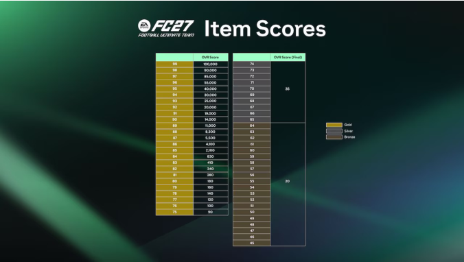
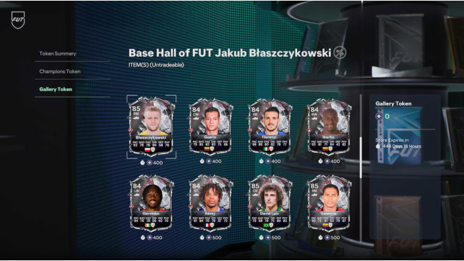
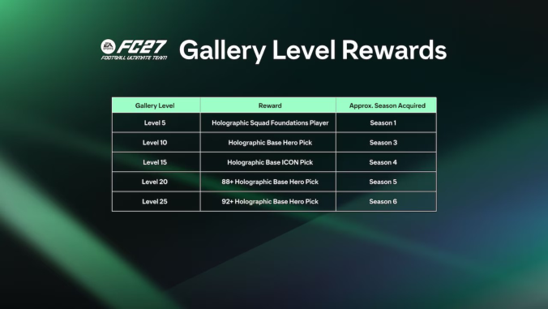
Temporada 1: novedades y contenido de lanzamiento
La Temporada 1: Ones to Watch estará activa desde el jueves 17 de septiembre de 2026 hasta el jueves 22 de octubre de 2026. Durante el Acceso Anticipado podrás encontrar Equipo de la Semana 1 y 2, SBC temáticas de Ones to Watch, SBC de Desafío y Mejora, Evoluciones, Cimientos de Plantilla y oportunidades para ganar Puntos de Temporada.
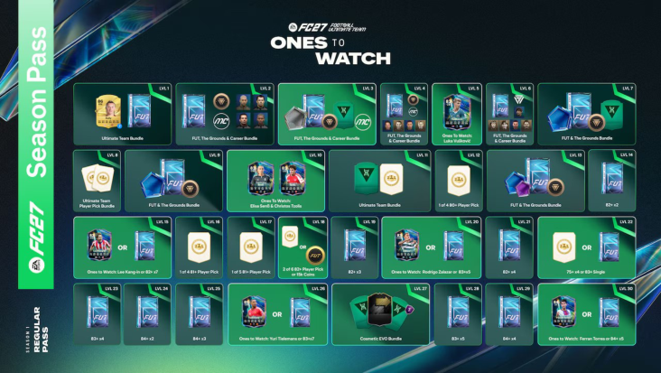
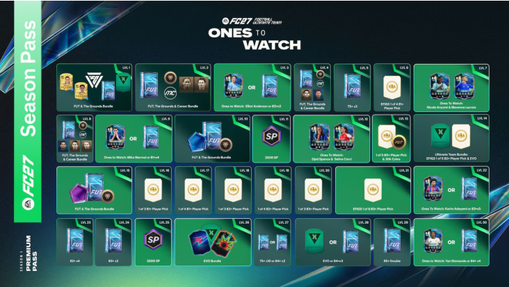
Ones to Watch
Los Artículos de Ones to Watch con 83 VG o más conservan sus Atributos de Artículo Base, mientras que los que estén por debajo se mejoran a 83. Todo Artículo tiene garantizado al menos 60 de Ritmo y todos sus Roles++ en su posición. Los Artículos siguen siendo elegibles para mejoras durante toda la temporada futbolística.
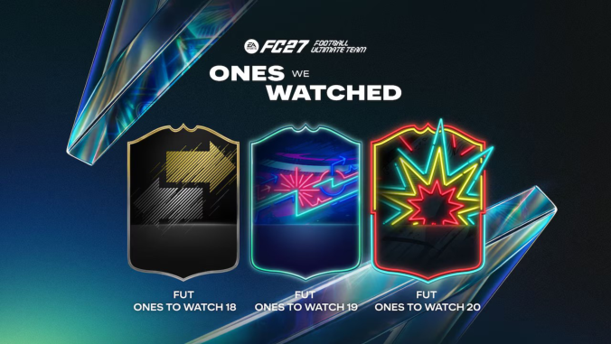
Destinados a la Gloria
El 25 de septiembre, Destinados a la Gloria pondrá el foco en los jugadores que la comunidad votó para que tengan un impacto importante esta temporada futbolística. Los primeros Artículos incluyen a Kylian Mbappé, Morgan Rogers, Matheus Fernandes, Alexander Isak y Bryan Mbeumo.
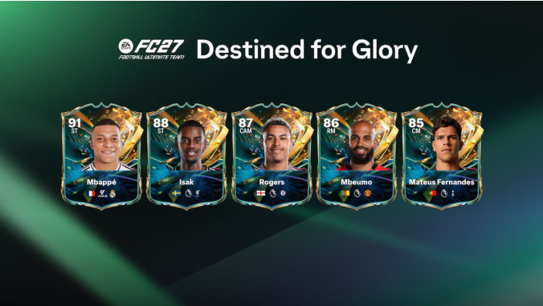
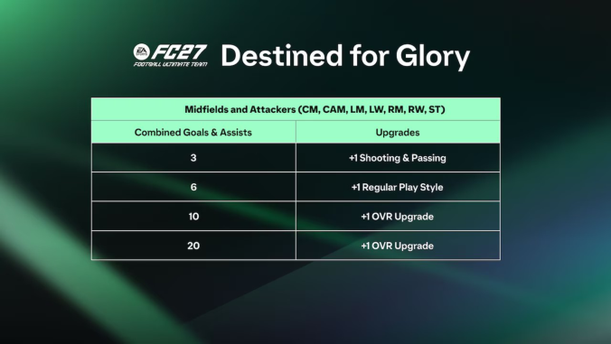

The Grounds
Disponible en PlayStation®5, Xbox Series X|S, Nintendo Switch™ 2 y PC, The Grounds es el nuevo hogar de los Clubes en EA SPORTS FC™ 27. Los partidos de Liga y Playoff, y Rush, regresan junto con nuevas formas de competir con tus compañeros de Club.
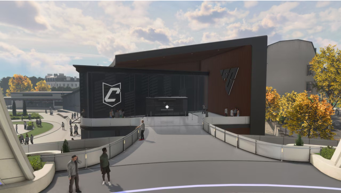
Arquetipos y progreso
Los Arquetipos siguen siendo el corazón de cómo construyes y perfeccionas a tu Pro. Dondequiera que juegues, en la calle o en un estadio, ganarás AXP y Monedas de The Grounds. Las experiencias por tiempo limitado, como los Torneos de Club y los Playoffs, ofrecerán mayores recompensas.
European Nights
La Temporada 1 presenta European Nights, que lleva las luces más brillantes de la UEFA Champions League a The Grounds. Tu recorrido comienza en los Distritos y culmina en un Torneo de Club de Estadio European Nights 11 contra 11.
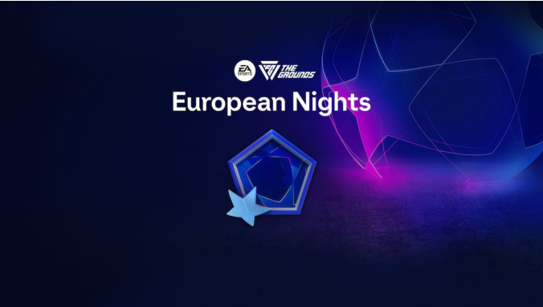
Screaming Grounds
Con la llegada de Halloween, la oscuridad se apodera de Screaming Grounds. Podrás apuntar a objetivos con forma de calabaza, participar en Eventos en Vivo de Halloween y conseguir artículos cosméticos.
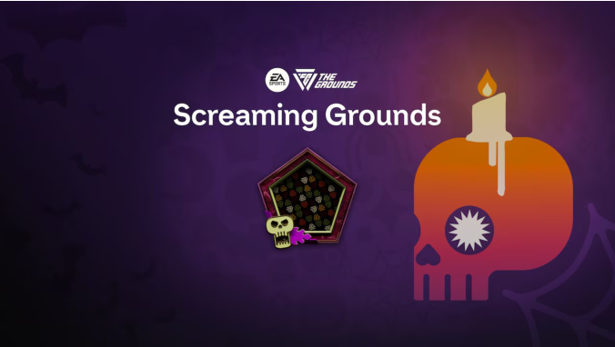
Las Tiendas de The Grounds
Las tiendas ofrecerán ropa urbana actualizada con frecuencia, inspirada en momentos del fútbol y de EA SPORTS FC™, además de temáticas de temporada y colaboraciones con marcas y clubes.
Modo Carrera
Para FC 27, el Modo Carrera sigue ampliándose con nuevas formas de jugar a lo largo de la Temporada. Manager Live regresa con nuevos Desafíos desde el lanzamiento, junto con nuevos Desafíos Impulsados por la Comunidad, mientras que la Temporada 1 también traerá una nueva selección de ICONOS para desbloquear y usar en todo el Modo Carrera.

Manager Live
Entre los desafíos iniciales se incluyen Astucia en el Mercado, Comienzo Ganador, Líder en Navidad y El Ascenso de Rio. Manager Live seguirá evolucionando con nuevos Desafíos inspirados en la temporada futbolística.
Desafíos de Creadores
Una de las mayores novedades de Manager Live es la posibilidad de crear tus propios Desafíos y compartirlos con tus amigos. A lo largo de FC 27 aparecerán nuevos escenarios e historias, incluidos Desafíos impulsados por la Comunidad.
ICONOS en Carrera de Jugador y Carrera de Entrenador
Los ICONOS volverán a formar parte de la experiencia del Modo Carrera, con nuevos jugadores que se irán desbloqueando a lo largo de las Temporadas. La Temporada 1 contará, entre otros, con Kaká, Antonio Di Natale, Alessandro Del Piero, Raúl y Robin van Persie.
Las 24 imágenes
Archivo visual completo del contenido gráfico disponible en el proyecto, numerado y ordenado.